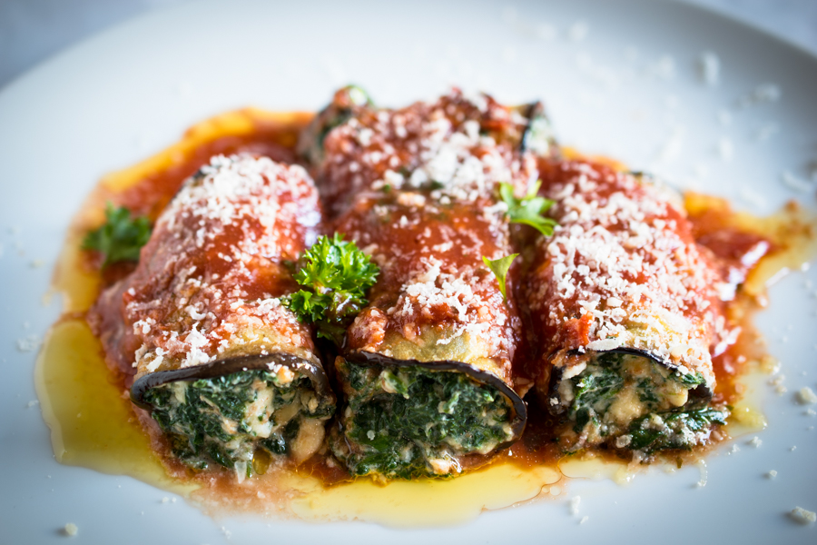

This spin on Italian 'melanzane alla Parmigiana' is quick to prepare and makes a deliciously creamy, veggie bake

Price : 150/-
Nutrition:
kcal
fat
saturates
carbs
sugar
fibre
protein
salt
376
23g
9g
23g
12g
10g
20g
1.3g
Ingrediants: 2 aubergines , cut into thin slices lengthways,
2 tbsp olive oil,
500g spinach,
250g tub ricotta,
grating of nutmeg,
350g jar tomato sauce,
4 tbsp fresh breadcrumb,
4 tbsp parmesan (or vegetarian alternative)
Method
Step 1:Heat oven to 220C/200C fan/gas 7. Brush both sides of the aubergine slices with oil, then lay on a large baking sheet. Bake for 15-20 mins until tender, turning once.
Step 2:Meanwhile, put the spinach in a large colander and pour over a kettle of boiling water to wilt. Cool, then squeeze out the excess water, so that it is dry. Mix with the ricotta, nutmeg and plenty of seasoning.
Step 3:Dollop a spoonful of the cheesy spinach mix in the centre of each aubergine slice, fold over to make a parcel and lay, sealed-side down, in an ovenproof dish. Pour over tomato sauce, sprinkle with breadcrumbs and cheese, and bake for 20-25 mins until golden and piping hot.